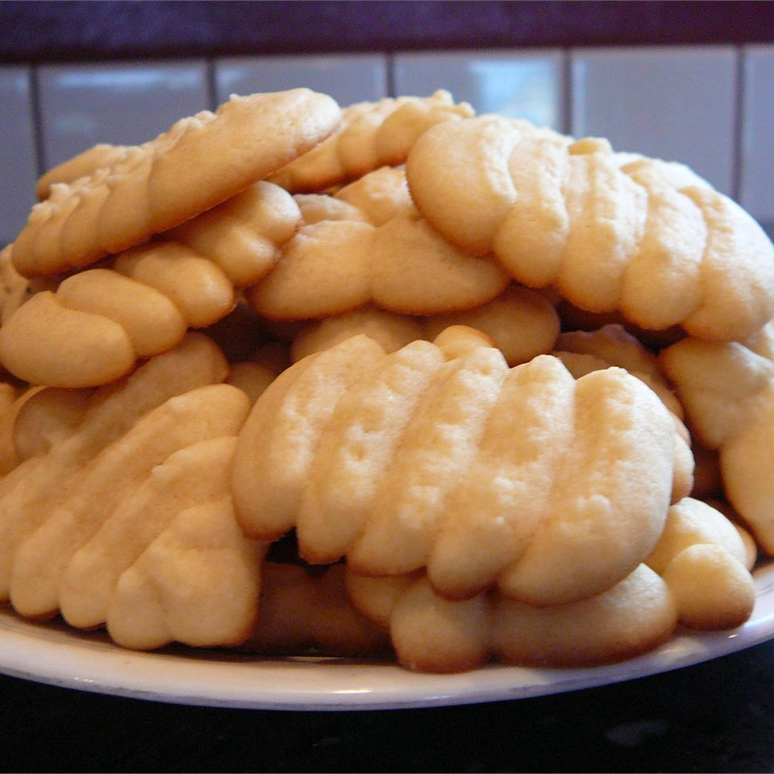

Cookies

Man's favourite snack
This is a simple butter cookie that can be used in a cookie press, as a drop cookie or made into a roll and sliced. There is no mystery cookie for a cookie press...any stiff butter type can be used. Just be sure to chill it thoroughly so it keeps its shape while baking.
Ingredients
- 1 cup butter
- 1 cup white sugar
- 1 egg
- 2 and a third cups flour
- 1 quarter tsp salt
- 2 tsp vanilla extract
Steps
- In a large bowl, cream together the butter and white sugar until light and fluffy. Beat in the egg, then stir in the vanilla. Combine the flour and salt; stir into the sugar mixture. Cover dough, and chill for at least one hour. Chill cookie sheets.
- Preheat oven to 400 degrees F (200 degrees C). Press dough out onto ungreased, chilled cookie sheets.
- Bake for 8 to 10 minutes in the preheated oven, or until lightly golden at the edges. Remove from cookie sheets to cool on wire racks.